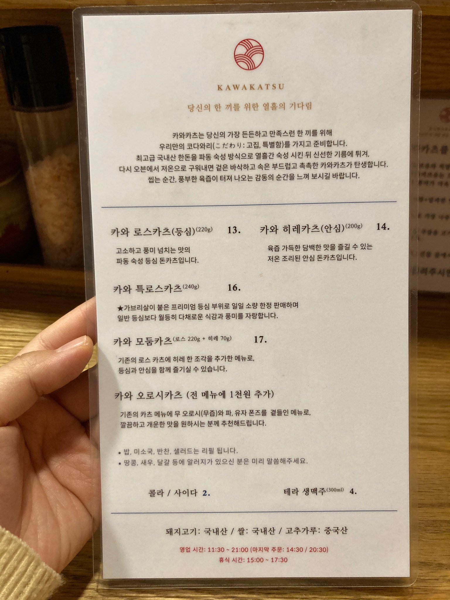

카와카츠
4.7
View : 178,076 | Write : 182 | Pick : 5,868
| 주소 |
서울특별시 마포구 동교로 126 서울시 강남구 삼성동 58-6 |
| 전화번호 | 070-8801-2053 |
| 음식 종류 | 까스 요리 |
| 가격대 | 만원-2만원 |
| 주차 | 주차공간없음 |
| 영업시간 | 11:30 - 21:00 |
| 휴일 | 일 |
| 메뉴 |
카와 로스카츠 (220g)
13,000원 카와 히레카츠 (200g) 14,000원 카와 특로스카츠 (240g) 16,000원 카와 모둠카츠 (200g+70g) 17,000원  |
| 리뷰(180) |
전체 (180) | 맛있다 (160) | 괜찮다 (14) | 별로 (6) |
| 딜쿠샤 | 가보고 싶었던 동네 맛집 카와카츠 대기하다 실패했다는 사람이 많아서 걱정했는데 평일저녁+코로나 조합으로 대기없이 바로 들어갔는데 너무 부드럽고 맛있었다ㅋㅋ |
| 빨강코알라 | 원격예약 해두고 가니까 주말 오후였는데 상대적으로 편하게 식사할 수 있었다. 개인적으로는 샐러드가 제 취향이였구 고기 양도 푸짐하고 맛있었슴당 |
| 콜라맨 | 일본유학을 5년정도 다녀왔는데 가끔 일본에서 먹었던 가츠가 그리울때가 있었습니다 주위 사람들 추천으로 방문했는데 일본 현지의 맛과 다르지 않네요ㅠㅠ |